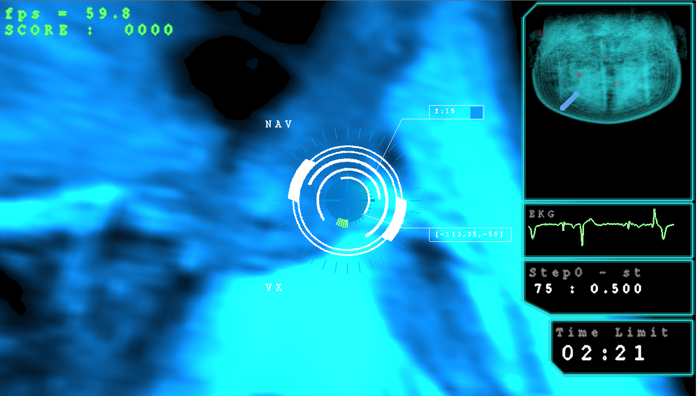
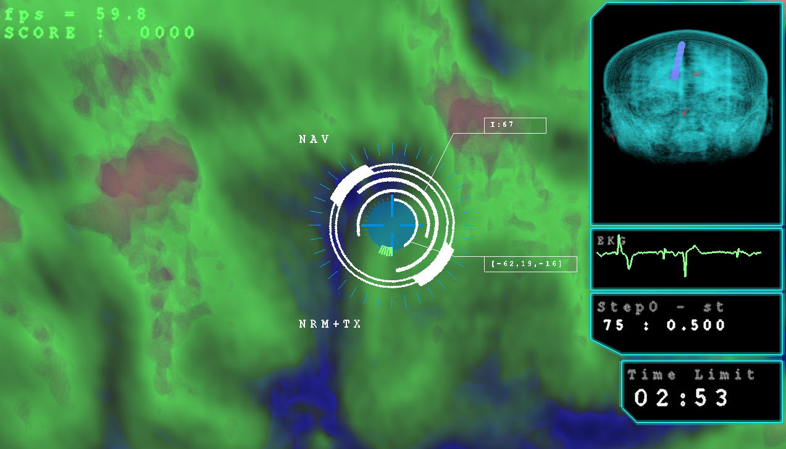
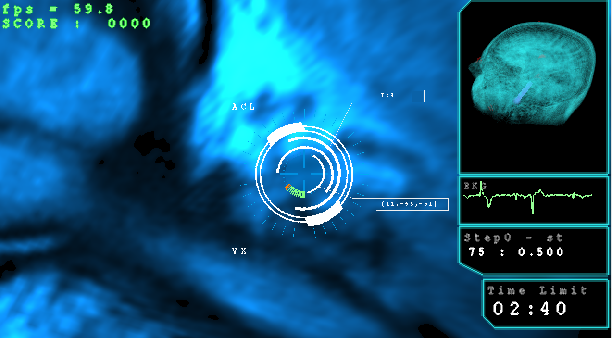

Bienvenidos a la pagina del proyecto ACyT de UADE Voxel Rendering en Videojuegos
  El renderizado de vóxeles (cubos que simulan un pixel de 3 dimensiones) ha adquirido una gran importancia a partir de su uso en el diagnóstico por imágenes en el campo de la medicina. La mayor parte de las técnicas actuales buscan lograr la mayor calidad posible de la imagen final a expensas del tiempo empleado en generarlas (rendering offline).
En el proyecto se explorarán técnicas para renderizar los vóxeles en tiempo real (realtime rendering) preponderando la rapidez a expensas de la calidad gráfica con el objetivo de lograr velocidades de cuadro compatibles con dispositivos de realidad virtual y realidad aumentada.
La experiencia obtenida se aplicará en la construcción de un videojuego basado en imágenes médicas.
La mayor parte de las técnicas actuales que se aplican a visualizar vóxeles se enfocan en lograr la mayor calidad gráfica y exactitud de la imagen, debido a su uso para diagnósticos médicos.
La mínima diferencia de color en un pixel puede significar el diagnóstico de una condición médica. Sin embargo para el desarrollo de un videojuego no se precisa dicha exactitud en los datos, pero surgen importantes restricciones de tiempo para que el jugador perciba la sensación de animación fluida. Esto se hace más evidente cuando se trabajan con dispositivos de realidad aumentada y realidad virtual donde las imágenes tienen que ser enviadas continuamente al hardware y responder ante los movimientos y acciones del usuario.
Este proyecto propone explorar técnicas alternativas donde se prepondere la velocidad en obtener las imágenes a expensas de perder calidad o precisión. Las técnicas pueden incluir alternativas para visualizar, predicción de movimiento, simplificación de los datos, entre otros.